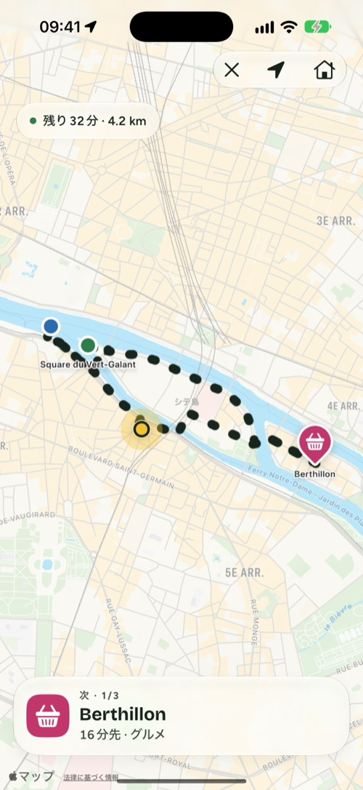
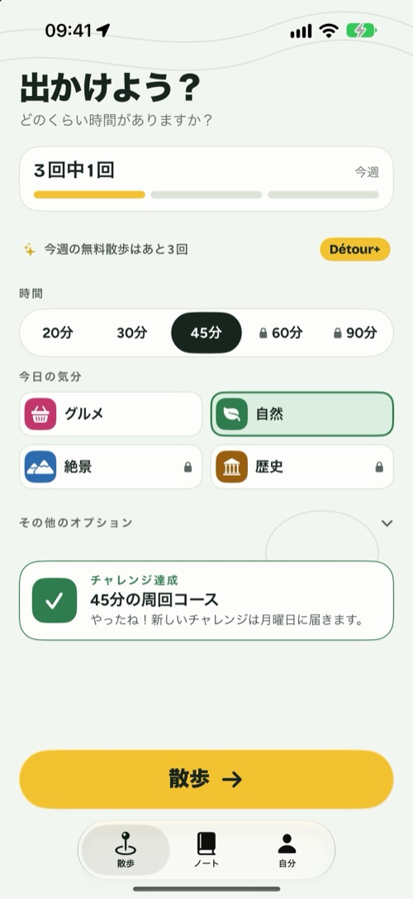
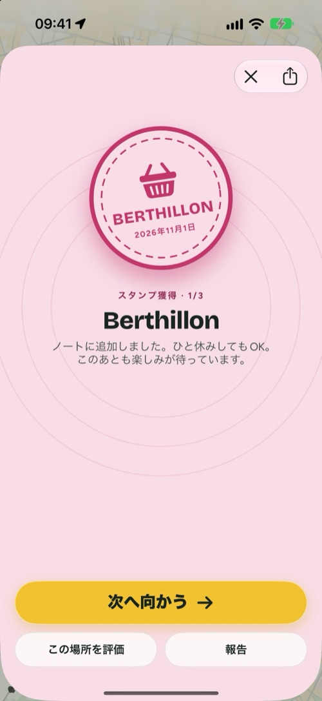
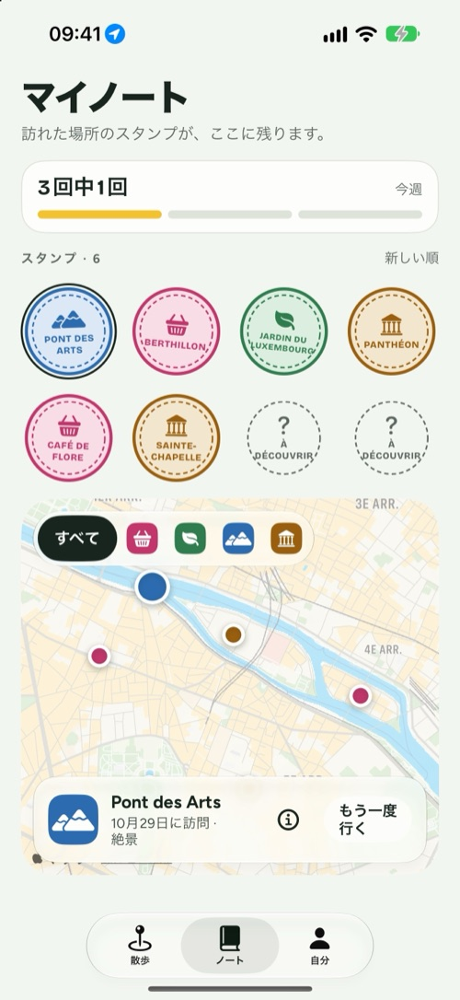

Détour
どのくらい時間がありますか？ 歩きに出かけたくなる理由を、ご用意します。
iPhone、iPad、iPhone Duo対応 · 無料（Détour+はオプション）

使い方
3つ選べば、もう外です。
Détourは、AからBへの行き方を教えるアプリではありません。出かける理由をつくって、家まで連れて帰ります。
1
時間
20分、30分、45分、それ以上も。コースは今いる場所から出発して、ここに戻ります。
2
気分
グルメ、自然、絶景、歴史。途中で立ち寄る本物の場所が2〜4か所。
3
出かける
ルートをたどるだけ。着いた場所は自動で確認され、ノートにスタンプが残ります。
4つの気分
観光ではなく、歩くきっかけを。
グルメパン屋さん、カフェ、アイスクリーム屋さん。
自然公園、川、庭園。
絶景展望台、橋、パノラマ。
歴史教会、博物館、記念碑。
画面で見る
4つの画面で、ひと歩き。



iPhone Duo
閉じれば手のひらに、開けば地図いっぱいに。
- 閉じたときは、外側の画面に必要なものだけ。時間、気分、そして「出かける」。
- 開くと、片側に設定、もう片側に描かれていくコース。
- サプライズモード：続く場所は、歩きながら明らかに。
- 散歩中は、次の場所と距離がロック画面とDynamic Islandに表示されたまま。
- 週ごとの目標、バッジ、毎週のチャレンジ。散歩はお好みでヘルスケアにも記録できます。

Détour+
まずは無料で習慣に。もっと先へ行くなら、Détour+。
散歩し放題。4つの気分すべて、路面を選べる最長90分のコース、そしてサプライズモード。
7日間無料
年間
年額プラン無料体験のあとは、1年ごとに更新
月間
月額プランいつでも解約できます
買い切り
1回だけ1回の購入で、ずっと使えます
無料：週3回の散歩、「自然」と「グルメ」の気分、最長45分、ノートとバッジ。価格は国・地域によって異なります。サブスクリプションの管理と解約は、Apple アカウントの設定から行えます。
プライバシー
あなたの散歩は、あなたのもの。
アカウント不要
作るものも、覚えるものもありません。ノートはiPhoneの中に残ります。
位置情報は散歩中だけ
コースを描いて場所を確認するために、散歩中にだけ使います。
広告なし
広告のためのトラッカーはありません。詳しくはプライバシーポリシーをご覧ください。